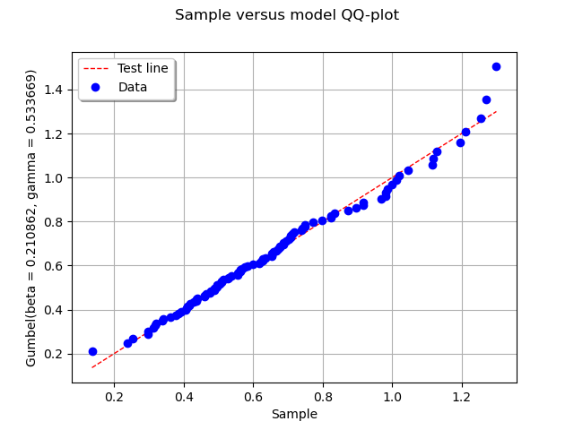
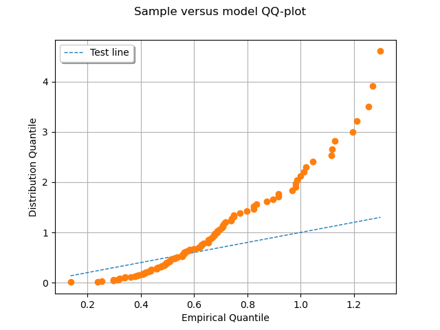

Note
Click here to download the full example code
Distribution fitting test using QQ plot¶
In this example we are going to perform a visual goodness-of-fit test for an 1-d distribution with the QQ plot.
from __future__ import print_function
import openturns as ot
import openturns.viewer as viewer
from matplotlib import pylab as plt
ot.Log.Show(ot.Log.NONE)
Create data
ot.RandomGenerator.SetSeed(0)
distribution = ot.Gumbel(0.2, 0.5)
sample = distribution.getSample(100)
sample.setDescription(['Sample'])
Fit a distribution
distribution = ot.GumbelFactory().build(sample)
Draw QQ plot
graph = ot.VisualTest.DrawQQplot(sample, distribution)
view = viewer.View(graph)

Incorrect proposition
graph = ot.VisualTest.DrawQQplot(sample, ot.WeibullMin())
view = viewer.View(graph)
plt.show()

Total running time of the script: ( 0 minutes 0.161 seconds)